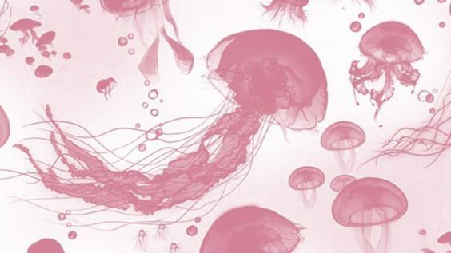

Personal
Bunga Faradila adalah seorang anak yang lahir di Medan, Sunggal Sumatera Utara di RS Kasih Bunda. Bunga anak ke 3 dari 3 bersaudara ia mempunyai seorang abang dan kakak, Bunga lahir pada tanggal 07 Desember 2008.
Siswa Yang Bersekolah Di SMK NEGERI 9 MEDAN Dengan Jurusan RPL (REKAYASA PERANGKAT LUNAK)
Bunga Faradila adalah seorang anak yang lahir di Medan, Sunggal Sumatera Utara di RS Kasih Bunda. Bunga anak ke 3 dari 3 bersaudara ia mempunyai seorang abang dan kakak, Bunga lahir pada tanggal 07 Desember 2008.

Saya mulai belajar di SMK 9 Medan pada tahun 2023.
Saya SD di Sekolah Pesantren YPMA selama 6 tahun, lalu lanjut SMP di Sekolah yang sama yaitu YPMA
Berikut beberapa pengalaman saya selama saya bersekolah.
Di SMP saya pernah menjadi bendahara selama 2 tahun, lalu mengikuti ekstrakurikuler pramuka.
Makanan favorite saya yaitu:
ayam goreng
Lalu setelah saya masuk SMK saya mengikuti kegiatan ekstrakurikuler rohis di SMK dan menjadi panitia di beberapa acara keagamaan seperti maulid, bukber, isra mi'raj, dan Pesantren kilat.
Jika ingin lebih tau banyak saya kunjungi kontak berikut.
 Bunga Faradila
Bunga Faradila